창경궁 미리보기
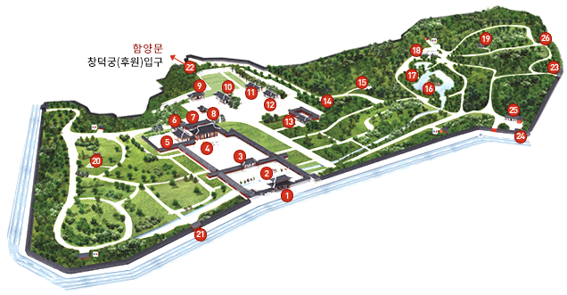
홍화문 (弘化門) (보물 제 384호)
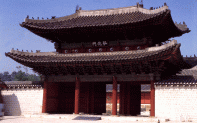창경궁의 정문으로 홍화(弘化)는‘조화를 넓힌다’, 즉 덕을 행하여 백성을 감화시키고 널리 떨친다는 뜻이다. 창경궁 창건 당시에 처음 건립되었다가 임진왜란 때 소실되어 1616년(광해 8)에 재건된 건물이다.
홍화문은 국왕이 직접 백성들을 만났던 곳이기도 하다. 영조는 1750년(영조 26)에 균역법을 시행하기 전에 홍화문에 나가 양반과 평민들을 만나 균역에 대한 의견을 들었다. 정조는 1795년(정조 19)에 어머니 혜경궁의 회갑을 기념하여 홍화문 밖에 나가 가난한 백성들에게 쌀을 나누어 주었고, <홍화문 사미도(弘化門 賜米圖)> 라는 기록화에 그 모습이 자세히 묘사되어 있다.
옥천교(玉川橋) (보물 제 386호)
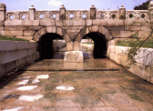1484년(성종 15)에 건립된 것으로 '구슬과 같은 맑은 물이 흘러간다'하여 옥천교라 하였다. 응봉산의 명당수가 창덕궁의 존덕정을 지나 창경궁의 북쪽 춘당지를 거쳐 옥천교로 흘러 남쪽으로 흘러간다. 궁궐에 남아있는 다리 중 원형이 잘 보존되어 있으며, 보물로 지정되어 있다. 다리 양쪽 아래에 아치(무지개) 모양 사이에는 도깨비 얼굴의 귀면이 조각되어 있는데, 이것은 물길을 타고 들어오는 귀신을 쫓아내어 궁궐을 보호하고 수호하는 의미를 가지고 있다.
명정문(明政門) 및 행각(行閣) (보물 제 385호)
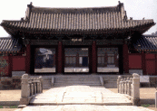명정문은 창경궁의 정문인 홍화문보다 안쪽에 놓여 중문의 기능을 갖는 평삼문이다. 위치로 보아서 명정전의 동서 중심축선상에 정확히 놓이지 않고 남쪽으로 약 1.2미터 벗어나 있다. 문의 좌우에 연결된 동행각을 어느 정도 명정문에 맞추어 배치하였기 때문에, 이에 의하여 둘러싸인 명정전의 중정(中庭)은 정확한 방형이 아니고 기울어져 있다. 정면 3칸, 측면 2칸의 팔작지붕으로 다포계 건물인데, 잘 다듬은 원형 주초석 위에 중앙열의 주열(柱列)에는 각 칸마다 2매씩의 육중한 판문을 달아 안으로 열리게 하였다. 이 건물은 포작(包作)과 건축의 형식으로 보아 명정전과 함께 광해군 때 재건되어 지금까지 보존되고 있는 것으로 추정된다.
명정전(明政殿) (국보 제 226호)
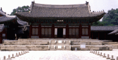명정전은 창경궁의 으뜸 전각인 정전(正殿)으로, 국왕의 즉위식, 신하들의 하례, 과거시험, 궁중연회 등의 공식적 행사를 치렀던 장소이다. 인종이 1544년(중종 39) 이곳에서 즉위했으며, 1759년(영조 35) 6월 66세의 영조가 15세의 정순왕후를 맞이하는 혼례(또는 가례(嘉禮))가 치러지기도 했다. 1484년(성종 15)에 창건되어 임진왜란 때 소실되었다가 1616년(광해 8)에 재건되어 현재에 이르니, 현존하는 조선 궁궐의 정전 가운데 가장 오래된 건물이다. 경복궁의 근정전과 창덕궁의 인정전이 중층 규모로 거대하게 지어진 것에 비해 명정전은 상대적으로 규모가 작다. 이는 애초에 창경궁이 정치를 위해 지은 궁궐이 아니라 왕대비 등의 생활공간으로 지은 궁궐이기 때문이다.
앞쪽에 펼쳐진 마당, 즉 조정(朝廷)에는 얇고 넙적한 박석을 깔고 중앙에는 삼도(三道)를 두어 왕궁의 격식을 갖추었다. 정전 마당 양옆에 늘어선 돌들은 품계석이라 하는데, 행사 때 문무백관들이 품계석에 새겨진 각자의 품계에 맞춰 국왕을 중심으로 우측에는 무신, 좌측에는 문신이 선다. 또한 삼도 가운데 중앙에 있는 어도는 국왕이 이동하는 길이었다.
명정전으로 오르는 계단 가운데 있는 경사진 돌을 답도라 하는데 그 위로 국왕이 탄 가마가 지나갔다.
명정전 건물 내부에는 국왕이 앉았던 용상이 있고, 그 뒤에는 ‘일월오봉병’이라는 병풍이 있다. 해와 달은 국왕과 왕비 또는 양과 음을 상징하고, 다섯 봉우리의 산은 전국의 오악 또는 오행을 상징하여, 국왕과 왕비가 전국토를 잘 다스림을 뜻한다고 한다.
명정전 앞 양 옆에는 ‘드므’라 불리는 큰 청동그릇이 있다. 드므에는 물을 가득 담아두어 화재예방의 의미가 있지만, 화마가 불을 지르러 왔다가 물에 비친 자기 모습을 보고 놀라서 달아났다는 이야기도 있다.
문정전(明政殿) (국보 제 226호)
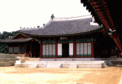문정전은 창경궁의 편전으로, 국왕이 관리들과 만나 업무 보고를 받고 중요한 정책을 결정하던 집무실이었다. 문정전은 임진왜란 때 불에 타 광해군 8년(1616) 다시 지었고, 현재의 건물은 일제 강점기에 철거되었던 것을 1986년에 다시 지은 것이다.
문정전은 왕실 가족의 신주를 모신 혼전(魂殿)으로 쓰인 경우도 있었고, 영조의 첫째 왕비인 정성왕후와 철종의 비인 철인왕후의 혼전으로 사용되었다.
이곳은 영조가 사도세자를 뒤주에 가두라고 명하고 서인으로 폐한 곳이기도 하다. 그 후 뒤주는 홍화문 남쪽에 있는 선인문 안뜰로 옮겨졌고, 사도세자는 8일 동안 굶주림과 더위에 신음하다가 숨을 거두었다고 한다.
숭문당(崇文堂)
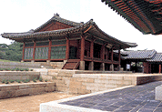숭문당은 글자 그대로 문(文)을 숭상한다는 의미를 담고 있다.
국왕의 경연(經筵)을 벌이던 곳으로, 특히 영조는 성균관 유생이나 종친들을 접견하고, 유생들을 시험했다.
숭문당의 창건연대는 정확하게 알려지지 않으며, 순조 때(1830년) 화재로 불탄 것을 그 해 가을에 재건하였다.
숭문당 현판과 내부에 걸려있는 일감재자(日監在玆)라는 현판은 영조의 어필이다. 일감재자는『시경(詩經)』에 나오는 말로 ‘하늘이 내려다보고 있으니 공경하는 마음을 잃지 말라’는 뜻을 담고 있다.
빈양문(賓陽門)
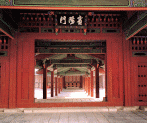명정전 뒤쪽에는 빈양문이 있는데, 이 문은 국왕의 공적 공간인 명정전과 사적 공간인 내전을 연결하는 문이다.
빈양(賓陽)은 ‘밝음을 공경히 맞이한다’는 뜻으로, 밝음인 양은 국왕을 상징하기도 한다. 이 문을 지나면 왕의 사적 생활공간으로 통하기 때문에 출입이 엄격히 제한되었다. 지금의 빈양문은 일제에 의해 강제 철거되었던 것을 1984년 발굴을 통해 1986년 중건 공사 때 재건한 것이다.
함인정(涵仁亭)
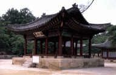함인정 자리에는 1484년(성종 15) 인양전이란 건물이 있었으나, 임진왜란 때 불타버렸다. 그 후, 함인정은 1633년(인조 11)에 건립되었고, 1830년(순조 30)에 불타 없어졌다가 1834년(순조 34년)에 중건되었다.
함인정은 국왕이 신하들을 만나고 경연을 하는 곳으로 이용하였으며, 영조가 문·무과에 합격한 사람들을 이곳에서 접견하기도 하였다.
함인정은 건물 사방이 벽체 없이 시원하게 개방된 모습인데, 19세기 궁궐기록화인 <동궐도> 에는 지금과 달리 삼면이 막혀 있다.
함인정 내부의 사면에는 사계절을 노래한 중국 진나라 화가 고개지의 사시(四時)라는 시가 걸려있어 푸른 소나무에 둘러싸인 정자에 운치를 더해준다.
경춘전(景春殿)
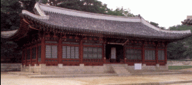경춘전의 경춘(景春)은 '햇볕 따뜻한 봄'이라는 뜻이다. 1484년(성종 15) 창건 당시에 건립된 침전 건물로 주로 왕대비, 왕비 또는 세자빈 등이 거처했던 것으로 보인다. 임진왜란, 이괄의 난 등으로 여러 차례 소실되었다가, 1834년(순조 34)에 중건되었다.
편액의 글씨는 순조의 어필이다. 이곳에서는 22대 정조와 24대 헌종이 태어났고, 성종의 생모 소혜왕후, 즉, 인수대비 한씨와 숙종비 인현왕후 민씨, 정조의 생모 헌경왕후, 즉 혜경궁 홍씨 등이 승하하였다.
사도세자는 정조를 낳기 전에 용이 이곳 경춘전에 들어오는 꿈을 꾸고, 경춘전 동쪽 벽에 용 그림을 그려두었다. 정조는 본인의 탄생을 기념해 경춘전 내부에 ‘誕生殿(탄생전)’이라 쓴 현판을 걸었으나 지금은 남아있지 않다.
환경전(歡慶殿)
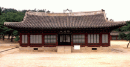환경전은 창경궁의 내전(內殿) 건물 중 하나로 세자나 국왕이 생활하던 곳이며, 중종과 소현세자가 승하한 곳이기도 하다.
성종 때(1484년) 창건되었다가 임진왜란 때 불타 없어지고, 1616년(광해군 8)에 중건되었다가, 1830년(순조 30)에 화재를 당한 후 1834년(순조 34)에 다시 중건되었다.
이 건물은 빈전과 혼전으로 사용된 예가 많았는데, 빈전은 왕 또는 왕족의 시신이 들어 있는 재궁(관)을 모신 건물을 말한다.
통명전(通明殿) (보물 제 818호)
내전 가장 깊숙한 곳에 남향으로 위치한 통명전은 왕비의 침전으로 내전의 으뜸 전각이다. 통명전은 보물 제818호로 지정되어 있다. 월대 위에 기단을 조성하고 그 위에 건물을 올렸으며, 연회나 의례를 열 수 있는 넓은 마당에는 얇고 넙적한 박석을 깔았다.
이곳에서는 희빈 장씨의 인현왕후 저주사건이 있었다. 1694년 (숙종 20) 갑술환국으로 인현왕후가 복위되자 희빈으로 강등된 장씨는 인현왕후를 저주하며 처소인 취선당에 신당을 차리고 통명전 일대에 흉물을 파묻었다.
희빈 장씨는 이로 인하여 사약을 받게 되고, 희빈 장씨의 시신은 정문인 홍화문 남쪽에 있는 선인문을 통해 나가게 된다.
통명전 뒤뜰에는 샘이 있는데, 1757년(영조 33)에 ‘샘물이 맵도록 차다’고 하여 열천(冽泉)이라 하였다. 통명전 서쪽의 연지는 샘이 마당으로 넘치는 것을 막기 위해 1485년(성종 16)만들었다.
양화당(養和堂)
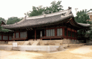통명전 옆의 양화당은 내전의 한 공간으로 사용되었다. 인조가 병자호란 후 남한산성에서 돌아와 이곳에서 장기간 머물렀다.
이후 인조는 청나라 사신을 이곳에서 접견하기도 하였다. 또한 이곳은 25대 철종의 왕비 철인왕후 김씨가 간병을 받다 승하한 곳이기도 하다. 지금의 양화당은 1830년(순조 30)화재로 불탄 것을 1834년(순조 34)에 재건한 것이다.
영춘헌(迎春軒)과 집복헌(集福軒)
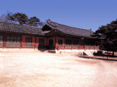남향인 영춘헌은 내전 건물이며, 집복헌은 영춘헌의 서쪽 방향에 5칸으로 연결된 서행각이다.
이 건물들의 창건 연대는 정확히 알려지지 않았으나 1830년(순조 30) 화재로 소실되었다가 1834년(순조 34)에 재건되었다. 집복헌은 1735년(영조 11) 1월에 사도세자, 1790년(정조 14)에 6월 순조가 탄생한 곳이기도 하다.
영춘헌은 정조가 즉위 후 자주 머물렀던 장소이자 1800년 49세의 나이로 승하한 곳이다. 정조는 영춘헌을 독서실 겸 집무실로 이용 하였다.
풍기대(風旗臺) (보물 제 846호)
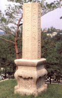풍기대는 영춘헌과 집복헌 뒤 언덕위에 세워져 있으며, 바람의 세기와 방향을 측정하기 위해 세웠던 풍기의 받침대이다. 풍기는 풍신기(風信旗)라고도 한다. 1770년(영조 46)에 측우기와 함께 제작된 것으로 추정하며, 원래 창덕궁 통제문 안에 설치되었다가 해방 전 이곳으로 옮겨진 것으로 보인다. 1985년에 보물로 지정되었다.
성종대왕태실 및 성종대왕태실비
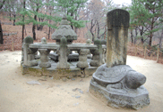성종의 태를 묻어놓았던 태실과 그 제작과 수리 기간을 적은 태실비이다. 조선왕실에서는 왕손이 태어나면 명당지를 찾아 태항아리를 묻어 보존하였다. 그러나 1928년에서 1930년 사이에 전국에 흩어져 있던 왕실 가족의 태실 항아리를 서삼릉으로 이봉하였다. 이 때 경기도 광주에 있던 성종대왕의 태실 석물을 1928년에 이곳으로 옮겨온 것이다.
춘당지(春塘池)
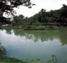이 연못은 춘당지라 부르는 연못으로 크게 두 부분으로 나뉘어져 있다.
그렇지만 이 두 연못이 전부 춘당지는 아니었다. 아래쪽의 큰 연못은 원래 내농포로 국왕이 궁궐 안에서 직접 농사짓는 의식을 행했던 곳이었다. 1909년에 일본인들이 이곳에 연못을 만들었고, 1986년에 우리 전통양식에 가깝게 재조성한 것이다. 위쪽의 작은 연못이 원래의 춘당지로, 백련지/백련담 등으로 부른 기록도 있다.
팔각칠층석탑(八角七層石塔) (보물 제 1119호)
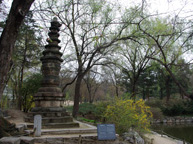춘당지를 따라 왼쪽으로 걸어가다 보면 팔각칠층석탑이 보인다.
이 탑은 일제 강점기 이왕가박물관을 만들 때 만주(滿洲)에서 가지고 온 상인으로부터 매입하여 세운 것으로 알려져 있으며, 라마식 탑으로 중국 명나라(1470년)때 만들어졌다는 글귀가 탑신에 들어있다. 기단은 사각형의 지대석과 팔각의 2중 기단으로 되어 있다.
대온실(大溫室) (등록문화재 제 83호)
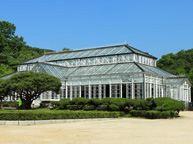1909년에 완공한 우리나라 최초의 서양식 온실이다. 대온실은 창덕궁에 거처하는 순종 황제를 위로한다는 명목으로 일본인들이 창덕궁에 인접한 창경궁내에 동물원과 함께 지었다. 일본인이 설계하고 프랑스 회사가 시공하여 완성하였으며, 철골구조와 목조가 혼합된 구조체를 유리로 둘러싼 서양식 온실이다. 준공 당시에는 열대지방의 관상식물을 비롯한 희귀한 식물을 전시하였다. 1986년 창경궁 복원 이후에는 국내 자생 식물을 전시하고 있으며, 2004년 등록문화재 제83호로 지정되었다.
관덕정(觀德亭)
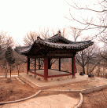대온실 오른쪽 숲에 정자가 하나 보이는데 이곳이 관덕정이다.
이곳은 원래 누에를 치던 곳이었는데, 1642년(인조 20)에 활쏘기를 위한 사정(射亭)을 지어 취미정(翠微亭)이라 불렀으며, 1664년(현종 5)에 이름이 관덕정으로 바뀌었다. 관덕정 아래에는 군사들이 활쏘기나 말타기 연습을 할 수 있는 넓은 공간이 마련되어 있었다.
관천대(觀天臺) (보물 제 851호)
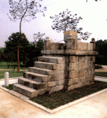문정전 앞쪽에 있으며, 천문을 관측하던 소간의를 설치했던 시설로 보인다. <서운관지> 에 “관천대는 천문 기상을 관측할 때 소간의를 그 위에 설치하므로 소간의대 라고도 한다” 는 기록이 있어 간의를 설치한 시설로 보고 있다. 최근에는 시간을 측정하던 일성정시의(日星定時儀)를 설치했던 시설이라는 주장이 제기되고 있다. 일제 때 다른 곳으로 옮겨졌던 것을 창경궁 정비 사업 때 제자리로 옮겼다. 1985년에 보물로 지정되었다
선인문(宣人門)
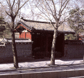홍화문에서 이어진 궁 담장의 남쪽 곧 창경궁 동남쪽 담장에 있는 궁문이다. 이 문은 성종 때 처음 세워졌으나 임진왜란 때 소실되었고, 광해군 때 재건되지만, 1857년(철종 8)에 다시 소실되었다. 현재의 문은 고종 연간에 재건한 것으로 보인다.
『동국여지비고』에 의하면 이 문의 예전 이름은 서린문(瑞燐門)이며, 동궁(東宮)의 정문으로 조정의 신하들이 출입하였다.
함양문(창덕궁(후원)연결 입구)
과학의 문
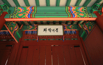1971년 9월에 창경궁의 월근문 동쪽 지역에 ‘국립과학관'을 준공하고 창경궁과 과학관 사이에 만든 문이다. "과학의 문" 현판은 박정희 전 대통령 친필이다.
월근문(月覲門)
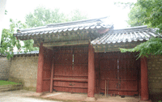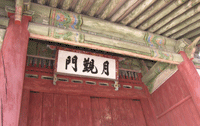홍화문 북쪽에 있는 이 문은 정조가 부친 사도세자의 묘(廟)인 경모궁에 수시로 참배하기 위하여 1779년(정조 3)에 건립하였다. 정조가 매달 초하루 경모궁에 참배하러 거둥할 때에는 반드시 이 문을 경유하였기 때문에 월근문(月覲門)이라 이름하였다.
관리사무소
집춘문(集春門)
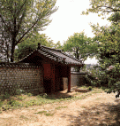창경궁 동북쪽 담장에 있는 궁문으로 서울 문묘가 마주 바라보이는 곳에 있다. 현재 이 문 외부 지역에 민가가 들어서 있어 출입문으로는 사용하지 않고 있다.
『동국여지비고』에 의하면 이 문은 후원의 동문으로, 성균관 서쪽과 제일 가까워 국왕들이 성균관으로 나갈 때에는 이 문을 경유하였다 한다. 창건 연대는 성종 때이나 현재의 건물은 조선조 말기에 건립된 것으로 보인다.